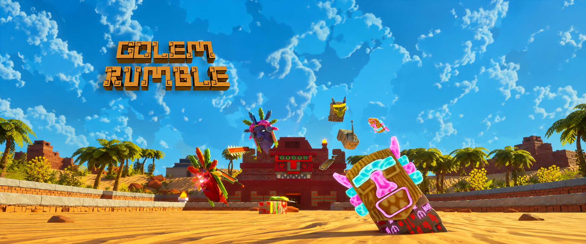
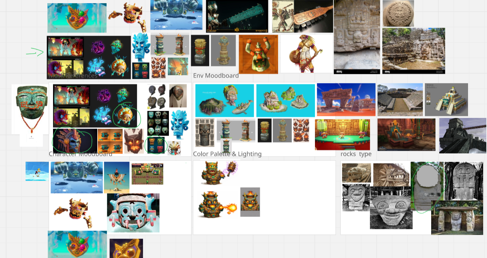
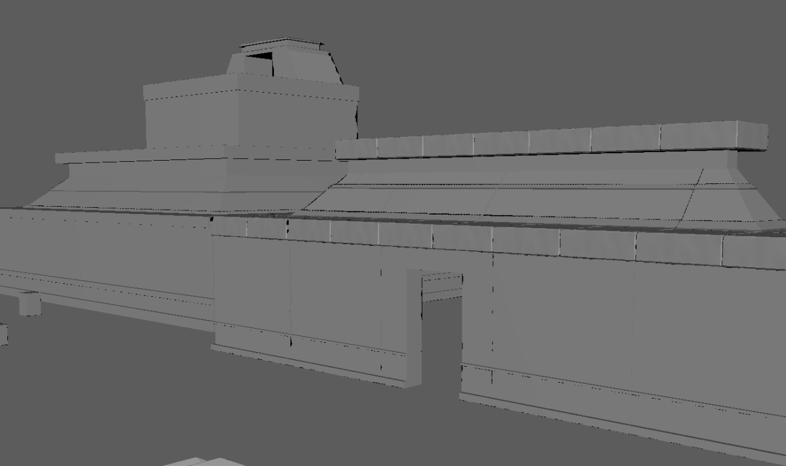
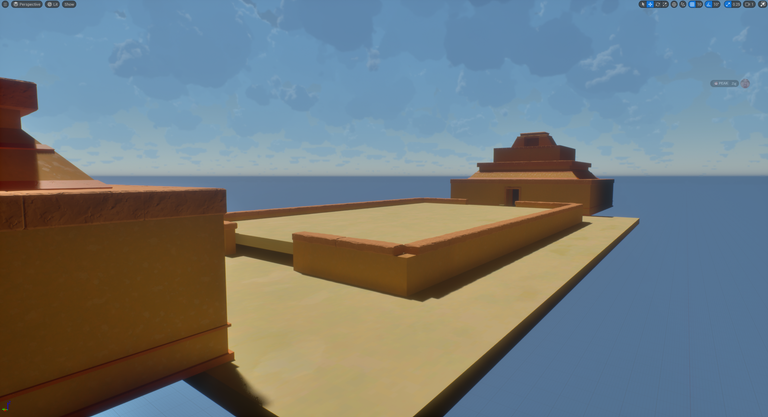
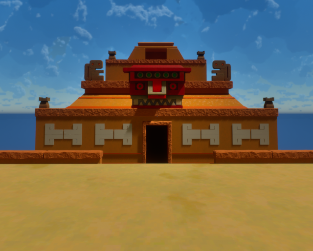
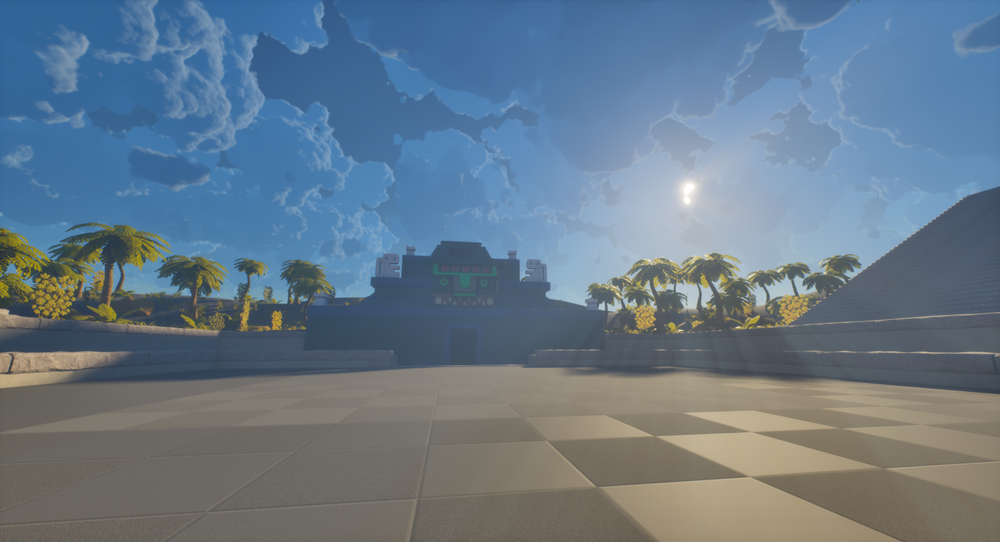
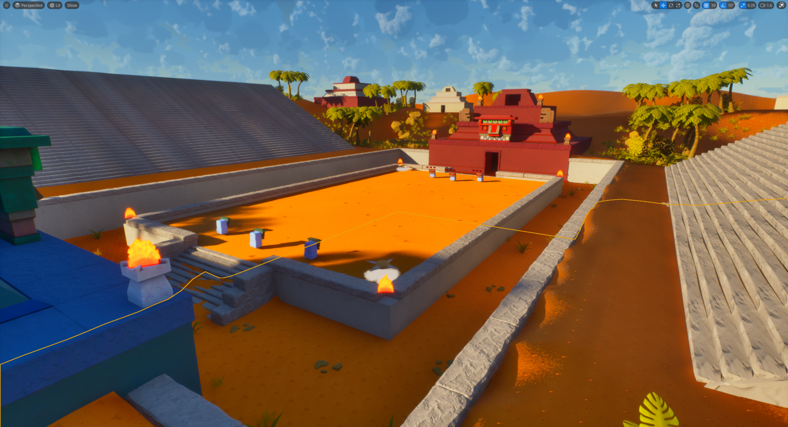
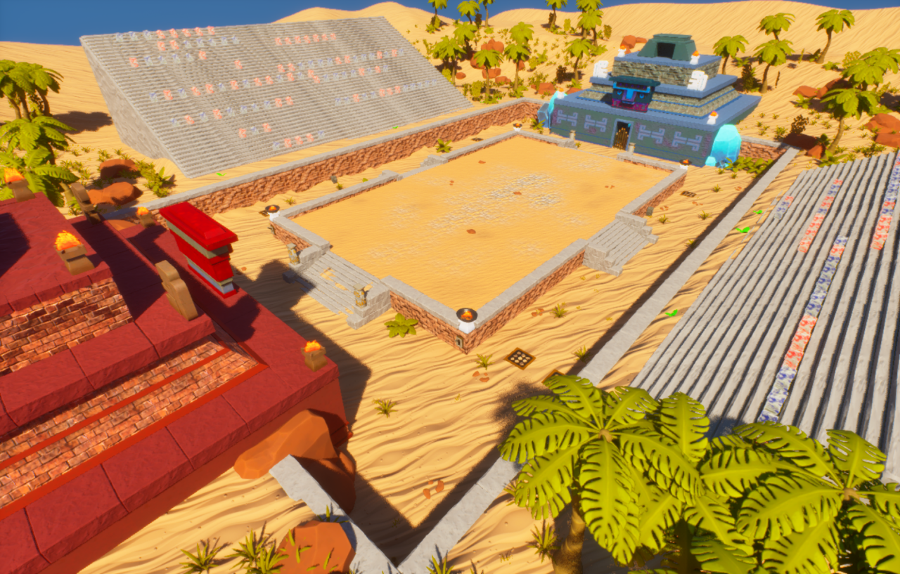
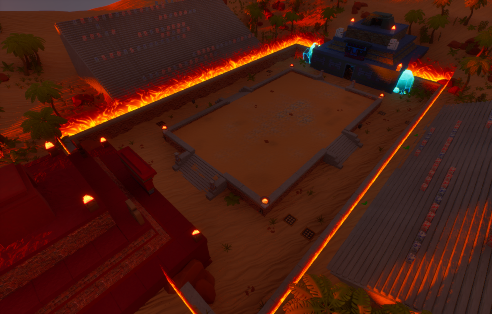

Golem Rumble

Golem Rumble - Teaser Trailer
The trailer could not load here. You can watch it on the Steam page below.
Planning
I started with collecting various references that ranged from real world structures and environments to videogames like Crash Bandicoot and other Mayan themed IPs. Gathering shapes, color palette, mood and composition.

Blocking Phase
After enstablishing the right shapes and architecture, I started blocking out the first pieces following the correct metrics and pivot points to build my scene in engine.

Adding the Arena
I then began building the centrepiece of the level: the arena. I iterated on its dimensions to give two players enough room to fight, create distance, and rethink their strategies. I also added a raised perimeter to introduce verticality, along with traps to influence player movement and vary the flow of combat.

Adding Details
I then added decorative details to give each structure a distinct identity and reflect its faction. I used colour and architectural elements to reinforce that identity and make the structures more visually engaging.

Working on the Surroundings of the Arena
Once the main structures were in place, I began developing the environment around the arena. I added a more detailed skydome, terrain, trees, rocks, and other environmental elements to make the scene more visually appealing.

Working on the Alpha Scene
Once all the scene elements were in place, I began working on textures to introduce colour to the level and create visual harmony throughout the environment.

Reaching the Final Results
After spending a couple of days in Substance Designer, I created the final textures for the scene. I also added props to reinforce each faction's identity and refined the arena layout to improve player movement.

One Last but Great Idea
In Golem Rumble, the first player to score three takedowns wins. This led me to ask: “What if both players reach two takedowns? Should the deciding round feel like just another attempt?” To make that moment feel more intense, I gave the arena a more dramatic atmosphere. I adjusted the direction and colour of the directional light, added a wall-of-fire shader, and introduced choral audio to heighten the tension and push both players to their limits.

Final Thoughts
I feel that Golem Rumble was an excellent showcase of my abilities as both an artist and a designer, challenging me to solve aesthetic and technical problems within a very short timeframe. Almost all playtesters responded positively to the visuals, and all of them enjoyed the surprise element in the fifth round. Although stylised environments are not my specialisation, I had a lot of fun working on this project.